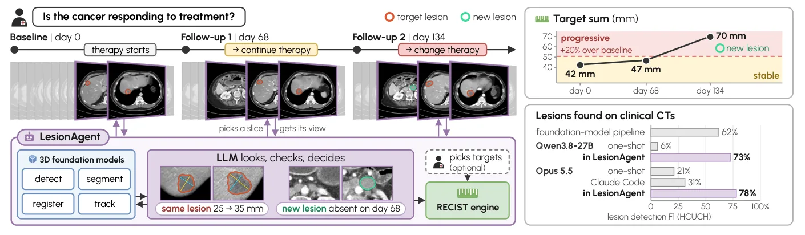
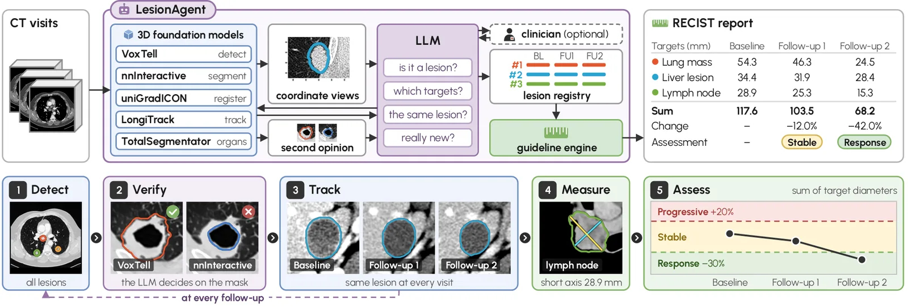
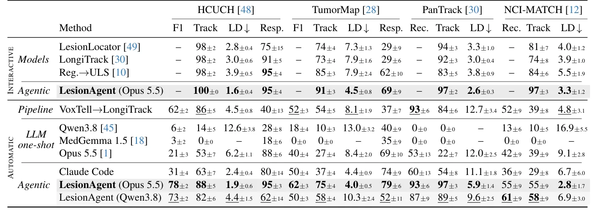
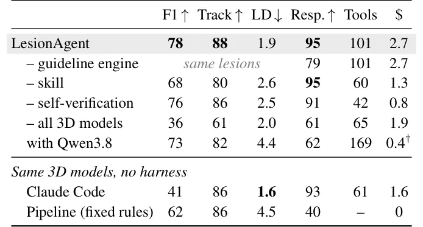

O Problema da Leitura Longitudinal
A gestão do câncer depende criticamente da avaliação periódica da resposta ao tratamento. A cada poucos meses, tomografias computadorizadas (CTs) são realizadas para determinar se a doença está respondendo, estável ou progredindo. Essa decisão ditona continuidade, modificação ou troca da terapia. No entanto, a leitura clínica é manual, lenta e sujeita a variabilidade interobservador. Dois radiologistas concordam nos mesmos lesões-alvo em apenas 41% dos pacientes e frequentemente discordam sobre a resposta final.
Os modelos de fundação 3D atuais resolvem etapas perceptivas isoladas: detecção, segmentação, registro e rastreamento. Contudo, nenhum deles executa a avaliação completa de resposta. Isso exige composição de modelos, captura de falhas e decisões lógicas que nenhum modelo é treinado para fazer. Aprender isso de ponta a ponta exigiria anotações longitudinais em escala, que não existem para a maioria dos cânceres.

A Abordagem Agêntica
Os autores propõem o LesionAgent, um agente baseado em LLM que realiza a leitura end-to-end sem treinamento específico para a tarefa. Em vez de treinar um modelo único, o agente opera modelos 3D congelados como ferramentas. Ele atua no espaço 3D através de vistas rotuladas com coordenadas, mantém um registro de cada lesão em todas as visitas e verifica cada saída do modelo antes de aceitá-la.
O pipeline começa na linha de base (day 0), onde um modelo detectável por texto propõe candidatos a lesões. O agente aceita ou rejeita cada um em vistas renderizadas. As lesões aceitas entram em um registro que mantém a máscara em cada visita. Em cada follow-up, o registro leva as lesões para o novo scan, onde um modelo longitudinal as segmenta. Se nada for encontrado, o agente inspecciona a posição registrada e registra a lesão como ausente.
Detalhes do Pipeline
O diferencial do LesionAgent está na verificação em loop. O agente não confia cegamente nas máscaras dos modelos. Ele usa renderizações rotuladas com coordenadas de voxel para que o LLM possa converter uma posição vista em uma chamada de ferramenta 3D, como um clique para ressegmentar uma lesão que foi perdida. Isso captura falhas de percepção que poderiam inverter a resposta clínica.
Outro componente crucial é o motor de diretriz determinístico. O LLM nunca calcula números ou categorias de resposta. Ele delega a medição das lesões nas máscaras e a aplicação das regras RECIST (Response Evaluation Criteria in Solid Tumors) a um motor externo. Isso elimina a alucinação numérica, um risco comum em LLMs, e garante que a avaliação seja baseada estritamente nas normas clínicas.

A Importância da Arquitetura (Harness)
Um dos achados mais significativos do paper é que a arquitetura do agente, e não a qualidade do LLM base, é o fator determinante. Para demonstrar isso, os autores compararam o LesionAgent com o Claude Code, que tem acesso a um shell e pode escrever e executar código Python arbitrário, mas não possui a lógica estruturada do agente.
Com os mesmos modelos 3D e o mesmo LLM (Claude Opus 5.5), o Claude Code alcançou um F1 de detecção de 41%, enquanto o LesionAgent alcançou 78%. Para modelos open-source, como o Qwen3.8-27B, a diferença foi ainda mais dramática: o modelo básico atingiu 6% de F1, enquanto o LesionAgent elevou esse número para 73%. Isso prova que a orquestração rigorosa, a verificação em loop e o motor determinístico são essenciais para tarefas clínicas complexas.
Resultados em Conjuntos de Dados Públicos
A avaliação foi realizada em quatro conjuntos de dados longitudinais públicos: HCUCH, TumorMap-Lung, PanTrack e NCI-MATCH. O LesionAgent foi avaliado em configurações interativas (com um clique por lesão de referência) e automáticas (apenas imagens). Em todas as métricas, incluindo F1 de detecção, precisão de rastreamento (Track), erro de eixo longo (LD) e precisão de resposta (Resp), o LesionAgent superou ou igualou os melhores métodos automáticos e interativos.
No conjunto HCUCH, o LesionAgent (Opus 5.5) alcançou 78% de F1 e 95% de precisão de resposta na configuração automática. No TumorMap, atingiu 62% de F1 e 79% de precisão de resposta. Esses resultados foram obtidos sem treinamento específico no DeepLesion, um benchmark comum para rastreamento de lesões. O LesionAgent recuperou 89,0% das lesões do DeepLesion, superando rastreadores treinados especificamente nesse benchmark (87,4%).

Validação Clínica e Comparação com Radiologistas
Além dos benchmarks públicos, o LesionAgent foi testado em CTs de follow-up clínico. O sistema concordou com a resposta dos radiologistas em 20 dos 23 follow-ups, incluindo todas as mudanças na resposta (continuar, mudar ou interromper terapia). Isso demonstra a robustez do agente em cenários reais, onde as variações anatômicas e de contraste são mais complexas.
Em comparação com pipelines automáticos que encadeiam modelos fixos, o LesionAgent reduziu drasticamente os falsos positivos de progressão. Onde um pipeline fixo chamava progressão em 33 dos 56 follow-ups, o LesionAgent fez isso apenas duas vezes. Isso é crucial, pois falsos positivos podem levar à interrupção prematura de terapias eficazes.
Limitações e Escopo
Apesar dos resultados promissores, o paper reconhece limitações. O LesionAgent depende da qualidade dos modelos 3D congelados usados como ferramentas. Se esses modelos falharem consistentemente em certos tipos de tecido ou lesões, o agente pode não ser capaz de corrigir o erro, mesmo com verificação em loop. Além disso, a abordagem requer múltiplas chamadas de API e processamento computacional, o que pode impactar a latência em tempo real.
O estudo focou em cânceres sólidos avaliados pelo RECIST 1.1. A generalização para outros tipos de câncer ou critérios de avaliação diferentes requereria a substituição do motor determinístico, mas a arquitetura do agente permaneceria válida. Também não houve treinamento em DeepLesion, o que limita a comparação direta com modelos treinados especificamente para esse benchmark, embora o LesionAgent tenha superado a maioria deles.
Conclusão
LesionAgent demonstra que agentes LLM podem realizar tarefas clínicas complexas e longitudinais sem treinamento específico, desde que orquestrem modelos de fundação de forma rigorosa. A combinação de verificação em loop, registro persistente de lesões e um motor de diretriz determinístico permite que o agente supere métodos automatizados e até agentes de código livre.
O código e a aplicação de leitura napari estão disponíveis no GitHub, permitindo que a comunidade teste e estenda a abordagem. Este trabalho abre caminho para sistemas de apoio à decisão mais robustos, onde a IA atua como um assistente confiável, verificando e compondo percepções em vez de apenas gerar respostas.

O que fica
- LesionAgent usa um LLM como orquestrador de ferramentas 3D congeladas, sem treinamento específico para a tarefa.
- O sistema supera pipelines automáticos e até Claude Code ao isolar a lógica de decisão do modelo base.
- Um motor determinístico aplica as regras RECIST, garantindo que números e categorias não sejam alucinados pelo LLM.
- A arquitetura (harness) é o fator crítico, elevando a precisão de detecção de 6% para 73% com modelos open-source.
Paper original: LesionAgent: Training-Free Agentic Tumor Tracking and Response Assessment in Longitudinal CT
Comentários
Nenhum comentário ainda. Seja o primeiro.